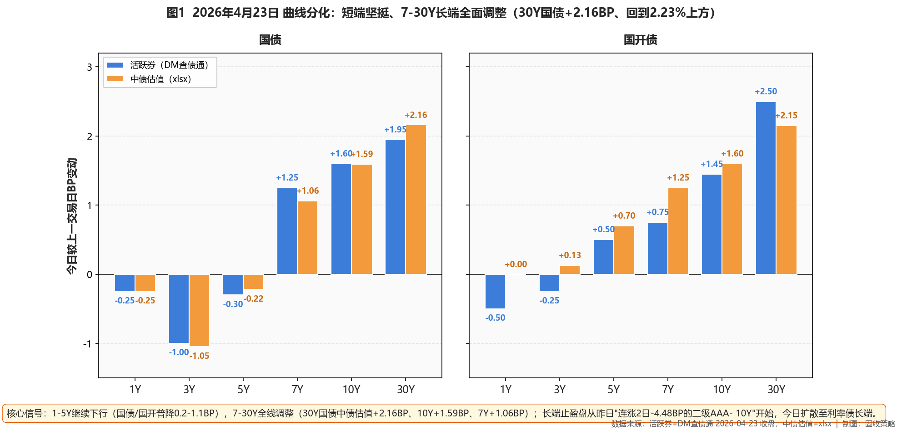
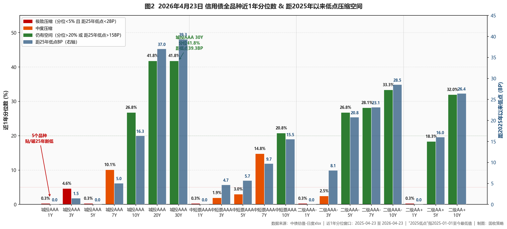

市场定性 震荡市 + 长端止盈窗口开启 + 哑铃结构强化——1-5Y继续下行（国债/国开普降0.2-1.1BP），7-30Y全线调整（30Y国债中债估值+2.16BP至2.2353%回到2.23%上方、10Y+1.59BP至1.7548%回到1.75%上方）；二级AAA- 7-10Y单日+2.64-3.27BP、一天回吐本周前两日-4.48BP涨幅的近60%；城投AAA 30Y逆势-0.54BP独立抗跌；短端依然坚挺（10个品种继续破/贴2025新低），昨日止盈判断今日被长端调整印证——下一步把止盈完成度拉到底、等待中期回调接盘。
- ✅ 长端城投（底仓保留）城投AAA 30Y（今日逆势-0.54BP、分位41.8%/距低点39.32BP）+ 城投AAA 20Y（分位41.8%/距低点37.02BP）——核心底仓10-15%、不新增；等待整体利率回调至30Y国债2.25-2.27%分位70%+再加仓
- ✅ 7Y凸点（中短票抗跌）中短票AAA 7Y（+0.20BP、分位14.8%/距低点9.72BP）+ 城投AAA 7Y（+0.20BP、分位10.1%/距低点5.05BP）——较二级AAA- 7Y（+3.27BP）抗跌明显；合计5-10%
- ⚠️ 5Y中段（暂停加仓）5Y二级AAA- +1.41BP、5Y二级AA+ +2.24BP、5Y永续AAA- +0.98BP——本日调整启动；维持20-25%仓位、暂停新增、等调整到位
- ❌ 规避短端贴底中短票AAA/AA+ 1Y/5Y、城投AAA 1/5Y、二级AAA-/AA+ 1Y——10个品种继续破/贴2025新低；1Y AAA存单1.445%（+0.5BP、较昨日历史新低微幅回调）——严禁新增、仅到期滚续
- ❌ 长端利率债（坚持止盈）10Y国债中债估值1.7548%/30Y 2.2353%——两大关键位回到阈值上方（翻转信号①②从"已触发"反转）；本日长端调整验证昨日减仓决策、继续维持减至核心底仓下限
- ① 30Y国债跌破2.23% ○ 反转回阈值上方：活跃券2.2330%（阈值上方0.3BP）、中债估值2.2353%（阈值上方0.53BP）→昨日"已触发"今日反转，本日长端调整验证止盈判断、继续减仓至核心底仓下限
- ② 10Y国债跌破1.75% ○ 部分反转：活跃券1.7470%（仍在阈值下方3BP）、中债估值1.7548%（回到阈值上方0.48BP）→活跃券尚未跌破、中债估值已回到1.75%上方——确认阻力位存在，长端利率债持续减仓
- ③ R-DR007利差走阔至>15BP ○ 未触发：当前6.31BP（较昨日收窄0.88BP）、距阈值8.69BP→流动性分层重现、加杠杆窗口关闭，去杠杆至≤105%、减仓中低等级久期
- ④ 10Y中短票AAA-3Y利差收窄至≤25BP ○ 未触发：当前43.73BP（较昨日+0.08BP基本持平）、距阈值18.73BP→中长-中端价差耗尽，止盈10Y中短票、转配5-7Y二永
- ⑤ 30Y-10Y城投AAA利差收窄至≤15BP ○ 未触发：当前34.48BP（较昨日压缩0.50BP）、距阈值19.48BP→超长期限结构极度平坦、补涨完成，分批减仓30Y超长信用
资金面
央行5亿7天逆回购净投放零（回归地量，较4/22的60亿净投放55亿明显收窄、传达"在全额满足基础上回归地量"信号）。Wind EDB实测：DR001 1.2171%（-0.10BP）、DR007 1.3238%（+0.36BP）、R001 1.2902%（+0.11BP）、R007 1.3869%（-0.52BP）；DR007继续低于OMO 7.62BP宽松格局延续；R-DR001利差7.31BP（较昨日走阔0.21BP）、R-DR007利差6.31BP（较昨日收窄0.88BP），跨周末分层整体收敛至温和位置；X-repo盘面银行隔夜1.2%、非银1.36-1.39%（较昨日1.34-1.36%轻微上移2-3BP、跨周末融入价微幅上行）。存单方面1Y AAA 1.445%（+0.5BP、较昨日历史新低1.44%微幅回调）、3M AAA 1.355%持平——历史新低后短暂喘息。一级市场国开1/3/5/10Y中标1.3052%/1.3705%/1.5704%/1.8057%，10Y国开一级加权仍低于二级4BP、配置盘仍主动加码但热度有所降温；下周关注4/27 MLF 6000亿续做（本月最大事件）。
利率债
长端反转回归：1.75%/2.23%两大关键位被止盈盘集中收复——活跃券30Y国债+1.95BP报2.2330%（回到2.23%上方0.30BP）、10Y国债+1.60BP报1.7470%（仍在1.75%下方3.0BP）、10Y国开+1.45BP报1.8635%、30Y国开+2.50BP；中债估值30Y国债+2.16BP报2.2353%（回到2.23%上方0.53BP）、10Y国债+1.59BP报1.7548%（回到1.75%上方0.48BP）、20Y国债+2.00BP报2.1578%、7Y国债+1.06BP；同时1-5Y继续下行：国债1Y/2Y/3Y/5Y -0.25/-0.51/-1.05/-0.22BP、国开1Y持平/3Y+0.13BP/5Y+0.70BP。国债期货全线回调（30Y主连-0.22%报113.830、10Y主连-0.07%报108.750）。国债30Y-10Y期限利差走阔至48.05BP（+0.57BP）。昨日跌破→今日反转上方，确认1.75%/2.23%确为市场公认阻力位；翻转信号①②从"已触发"反转——昨日的止盈纪律完全印证。

图1 利率债曲线分化：短端坚挺、7-30Y长端调整（2026-04-23 BP变动）
信用债（核心）
呈现"中短端维持+5Y以上止盈"三段分化：🔴 二级AAA- 7Y +3.27BP报2.1239%、10Y +2.64BP报2.2202%（单日回吐本周前两日-4.48BP涨幅近60%）；二级AA+ 10Y +2.64BP、5Y +2.24BP；永续AAA- 5Y +0.98BP；5Y二级AAA- +1.41BP——典型的获利了结+跟随利率债长端止盈模式。中短票AAA长端相对抗跌：7Y +0.20BP（分位14.8%/距低点9.72BP）、10Y +0.38BP（分位20.8%/距低点15.55BP）。城投AAA 30Y逆势-0.54BP独立抗跌（保险盘承接）、20Y +0.10BP/15Y +0.74BP微调——长端城投仍具韧性。短端依然坚挺：10个品种继续破/贴25年新低（中短票AAA 1Y再创新低报1.5060%）；1Y AAA存单1.445%较历史新低微幅回调+0.5BP。保险：30Y-10Y国债利差走阔至48.05BP仍>25BP阈值、本轮调整幅度不足以构成加仓信号。

图2 信用债全品种近1年分位数 & 距2025年以来低点压缩空间（含20/30Y长端）
策略矩阵
一、公开市场与资金面
央行今日开展5亿元7天逆回购（利率1.40%），当日5亿到期、净投放零、回归地量节奏——相对4/21-4/22的50-60亿连续净投放收窄明显，传达"在全额满足需求基础上回归地量"信号、进一步印证流动性宽松无虞。银行间资金面依旧宽松——Wind EDB实测：DR001 1.2171%（-0.10BP）、DR007 1.3238%（+0.36BP）、R001 1.2902%（+0.11BP）、R007 1.3869%（-0.52BP）；DR007继续低于7天OMO（1.40%）7.62BP，连续多日宽松格局延续。R-DR001利差7.31BP（较昨日走阔0.21BP）、R-DR007利差6.31BP（较昨日收窄0.88BP）——非银跨周融资压力阶段性减弱，分层整体收敛至温和位置。X-repo盘面银行隔夜1.2%、非银机构质押隔夜1.36%-1.39%（较昨日1.34-1.36%轻微上移2-3BP、跨周末融入价微幅上移）。存单方面1Y AAA同业存单1.445%（+0.5BP、较昨日历史新低1.44%微幅回调）、3M AAA 1.355%持平——历史新低后短暂喘息，但整体仍维持极低水位。
一级市场认购热度亮眼——财政部国债91/182/10Y加权中标0.9616%/1.0188%/1.6866%，全场倍数4.05/3.55/4.66；值得注意的是，10Y国债加权1.6866%显著低于二级中债估值1.7389%、低约5BP——配置盘在一级市场抢筹、对二级构成上行压力的传导通道形成。农发行3/10Y金融债1.4871%/1.8082%、全场倍数8.39/6；财政部香港2年期155亿人民币国债2/3/5/15Y发行利率1.32%/1.36%/1.50%/2.08%、认购倍数4.6倍。税期走款后资金面依旧宽松；下周关注4/27 MLF 6000亿续做（月内最大事件）。
二、利率债与债市总览
今日利率债进入"短端坚挺、长端止盈"的典型分化结构。活跃券端：30Y国债"26附息国债02" +1.95BP报2.2330%、10Y国债"26附息国债05" +1.60BP报1.7470%、10Y国开"25国开20" +1.45BP报1.8635%、30Y国开+2.50BP；中债估值曲线口径：30Y国债+2.16BP报2.2353%、20Y国债+2.00BP报2.1578%、10Y国债+1.59BP报1.7548%、7Y国债+1.06BP——7Y以上全面上行1-2BP；同时1-5Y继续下行：国债1Y/2Y/3Y/5Y -0.25/-0.51/-1.05/-0.22BP、国开1Y持平/3Y+0.13BP/5Y+0.70BP（国开5Y开始随长端调整）——利率债曲线从昨日的"长端过关突破"切换到今日的"7-30Y止盈集中、1-5Y坚挺"。
关键阻力位确认：10Y国债活跃券1.7470%仍在1.75%下方3BP、中债估值1.7548%已回到1.75%上方0.48BP；30Y国债活跃券2.2330%回到2.23%上方0.30BP、中债估值2.2353%回到上方0.53BP——昨日跌破的关键位今日部分回归，确认1.75%/2.23%两大位置确为市场公认的阻力位。国债期货配合调整，30Y主连-0.22%报113.830元、10Y主连-0.07%报108.750元——昨日创下的数月新高今日即出现修正。曲线形态上，国债30Y-10Y期限利差走阔至48.05BP（较昨日走阔+0.57BP）、呈现牛陡/熊陡混合结构（短端继续牛陡、长端熊陡）；中债估值10Y国开-国债隐含税率9.16BP基本持平。
核心判断：昨日的"下行斜率加速即止盈信号"今日已被长端调整直接印证——本日的长端上行2BP、关键位回归阈值上方正是止盈盘的集中兑现。从赔率角度看，短端1-5Y近1年分位仅0.3%继续贴底、已无拉仓空间；7Y国债分位17.8%/10Y 32.8%/20Y 46.4%/30Y 60.1%——长端分位数本日随调整上行已进入合理中枢（60%+分位），若下阶段出现回调至70%+分位可重新考虑加仓；但短期继续减仓至核心底仓下限。关注4/25工业企业利润、4/27 MLF续做、5月政治局会议三个关键事件。
图1 利率债曲线分化：短端坚挺、7-30Y长端调整（2026-04-23 BP变动）
三、信用债市场
信用债今日呈现"中短端维持、5Y以上长段止盈"的三段分化。银行二永是本日调整幅度最大的板块——二级AAA- 7Y +3.27BP报2.1239%（单日调整最剧烈）、10Y +2.64BP报2.2202%、分位分别28.1%/33.3%；二级AA+ 10Y +2.64BP报2.2476%、5Y +2.24BP报1.9928%、3Y +1.45BP；永续AAA- 5Y +0.98BP、3Y +0.84BP。活跃个券"26工行二级资本债01BC"、"26中行二级资本债01BC"、"26民生银行二级资本债01"收益率上行幅度均在2-3BP之间，与曲线估值印证。本日二级AAA- 10Y调整+2.64BP，相当于单日回吐本周前两日累计-4.48BP涨幅的近60%——典型的获利了结+跟随利率债长端止盈盘退出模式。
中短票AAA长端今日体现明显的相对抗跌——7Y +0.20BP报2.0135%（分位14.8%/距低点9.72BP）、10Y +0.38BP报2.1513%（分位20.8%/距低点15.55BP），相比二级AAA- 同期限（7Y +3.27BP、10Y +2.64BP）跌幅显著更小、印证"利率债长端止盈先于信用债、二永板块作为高弹性品种受冲击最大"的板块轮动逻辑；中短票AAA 5Y -0.06BP报1.8501%（距低点5.73BP、分位3.0%）已贴底；3Y +0.30BP报1.7140%；1Y -0.69BP报1.5060%（再创2025年以来新低）。
【长端城投】今日呈现"30Y独立抗跌+保险盘承接信号"的差异化分化——城投AAA 30Y今日逆势-0.54BP报2.5382%（连续两日小幅下行/分位41.8%/距低点39.32BP）、20Y +0.10BP报2.4507%（基本持平）、15Y +0.74BP报2.3140%、10Y -0.04BP报2.1934%、7Y +0.20BP报1.9925%——长端利率债+2.16BP上行的环境下、城投AAA 30Y仍能逆势小幅下行，是保险/年金配置盘在长端调整窗口择机增持超长城投的明显信号；30Y-10Y城投AAA利差从昨日34.98BP压缩至34.48BP（-0.50BP），印证超长城投相对走强；同时城投AAA 5Y -0.27BP报1.8360%（已贴25年以来新低）、3Y +1.19BP报1.7369%（受同业存单微幅回升+利率债中端调整传导）。
【信用债短端贴底面继续扩大】今日继续触及25年以来新低/贴底品种：中短票AAA 1Y（1.5060%、再创新低）/AA+ 1Y、AAA 5Y（1.8501%已贴底）、二级AAA- 1Y、城投AAA 1Y/5Y、城投AA+ 3Y、二级AA+ 1Y——共10个品种触及2025年以来新低或贴底（距低点≤1BP、近1年分位<1%）；1Y AAA同业存单1.445%（+0.5BP较4/22历史新低1.44%微幅回调）——历史新低后短暂喘息但整体仍极低；短中端在宽松资金面+存单极值驱动下继续向下/贴底，流动性垫/票息底仓的加仓窗口彻底关闭、严格限于到期滚续、禁止新增。
【保险视角】30Y-10Y国债期限利差今日走阔至48.05BP（较昨日走阔+0.57BP、仍显著高于25BP增配阈值），长端调整后保险配置盘的增配窗口有所扩大——今日30Y城投AAA独立抗跌已印证保险盘在长端的承接动作。对本行而言，30Y国债+2.16BP的调整幅度仍不足以构成"加仓到位"信号（需看到30Y国债上行至2.25-2.27%分位70%+、或50BP以上幅度的连续调整），保持10-15%超长信用底仓、观望为主。二级资本债在偿二代二期下基础因子优于永续、5Y/10Y二级AAA-仍是保险偿付能力友好型品种。
【xlsx实测止盈信号复盘】①10Y中短票AAA-3Y利差今日43.73BP（昨日43.65BP、+0.08BP基本持平），距25BP阈值18.73BP、未触发；②30Y-10Y城投AAA利差今日34.48BP（昨日34.98BP、压缩0.50BP），距15BP阈值19.48BP、未触发——信用端两条止盈信号均未触发；但利率端翻转信号①②从"已触发"反转回阈值上方，昨日的止盈判断在今日长端调整中完全印证——本行的止盈纪律完全未踩到追高接盘的坑。
图2 信用债全品种近1年分位数 & 距2025年以来低点压缩空间（含长端20/30Y）